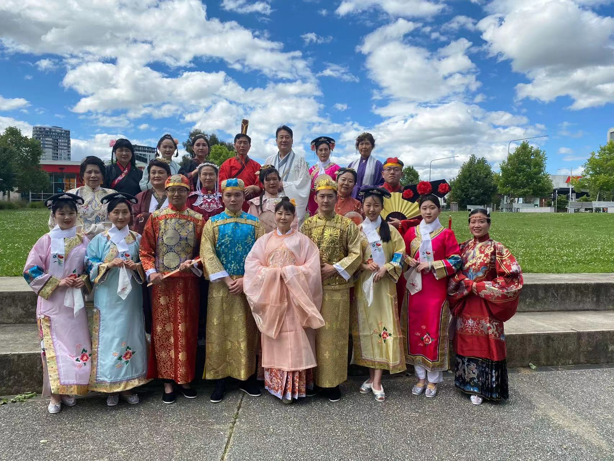
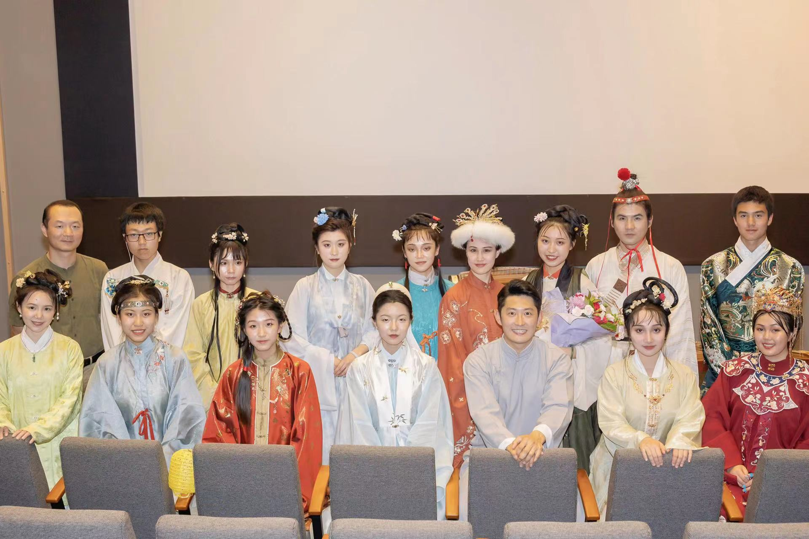
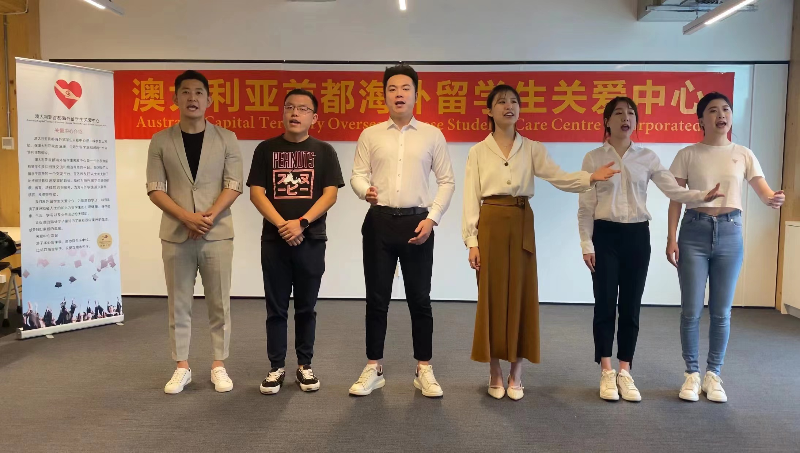
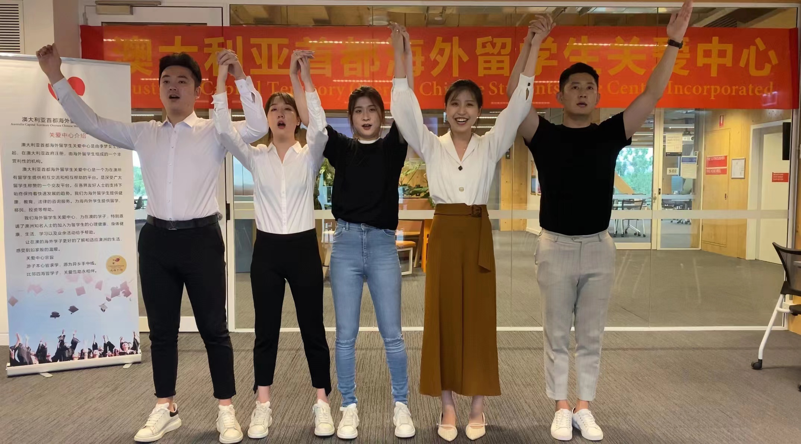
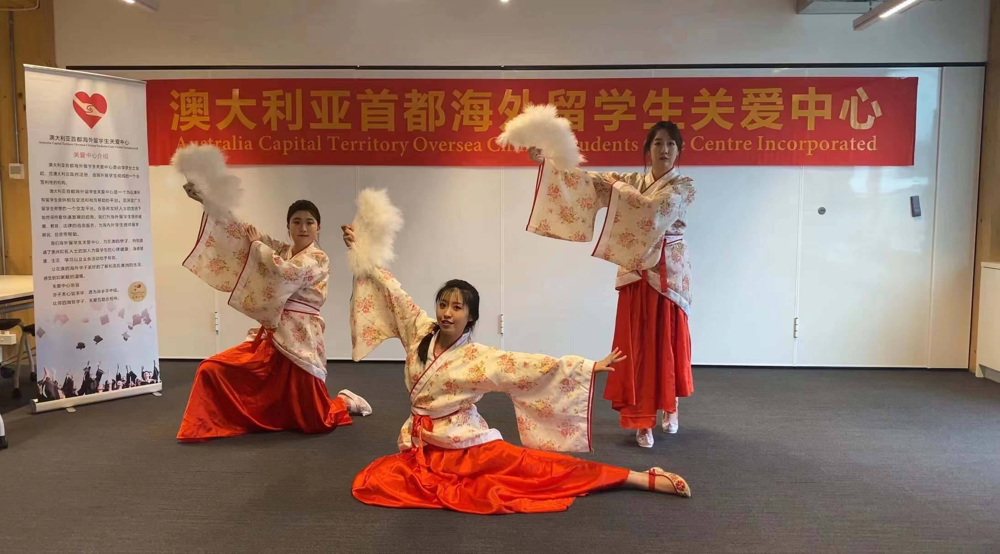

元宵晚会
在元宵佳节来临之际，澳大利亚海外留学生关爱中心将为海内外华人华侨、海外学子，以视频形式献上一台弘扬中华民族传统文化的艺术盛宴。
元宵晚会视频将在元宵节当天（2月15日，周二），通过微信公众号、小红书、脸书、流金岁月栏目、Riotact中文等平台以视频形式播出。心系祖国观冬奥、身在异国慰亲人。

另外，中国驻澳大利亚使馆文新处为晚会准备了丰富的礼物，松雁群公参代表使馆也将为晚会致词。

在视频观看过程中，欢迎观众踊跃进行评论互动。每个栏目播出时将随机抽取10名评论观众，赠送礼物、并将受邀参加海外留学生关爱中心之后举行的领奖仪式。签字墙、红地毯，在海外留学生关爱中心让您找到明星的感觉。


